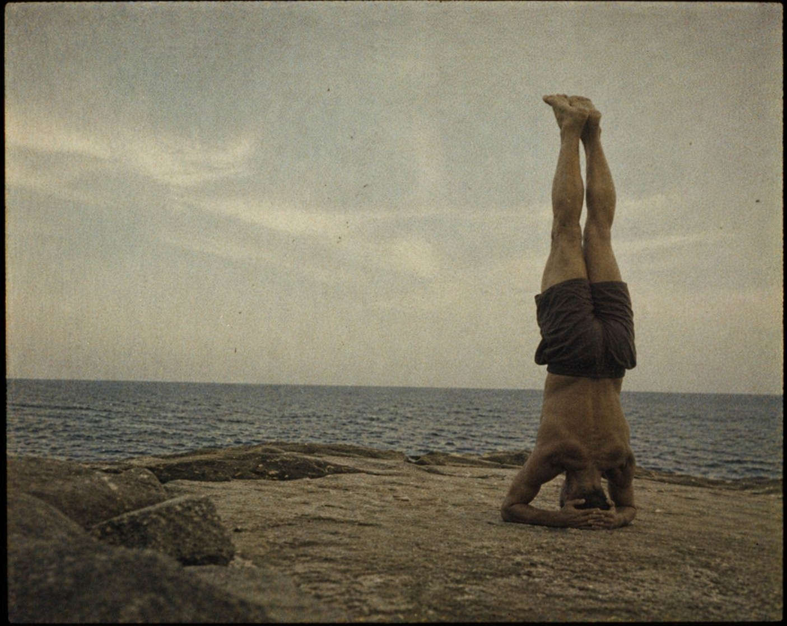
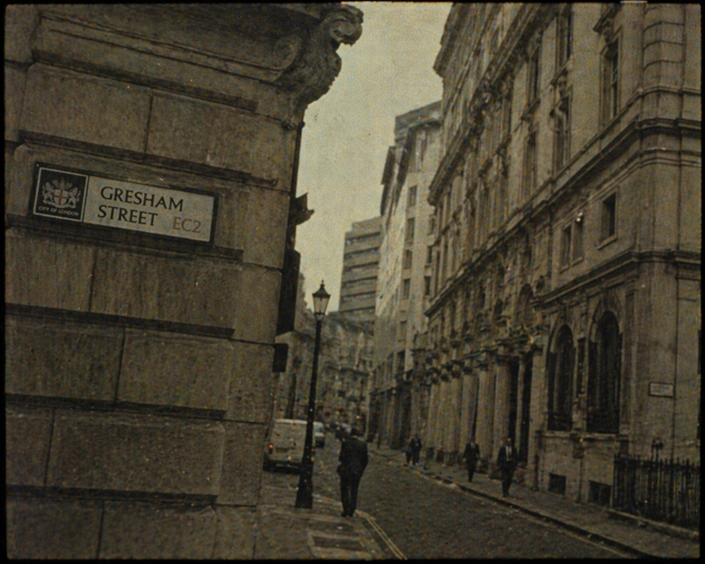
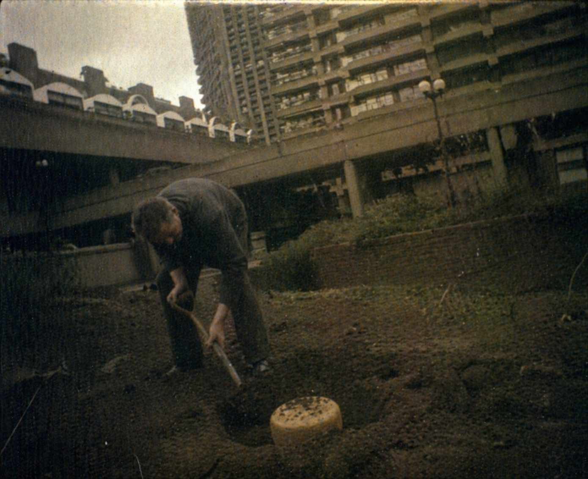

Bitcoin, Yoga, and Gold
A Conversation between Steffen Huck and Sam Williams
SHSo, Sam, when did you first hear about Bitcoin?
SW2013.
SHAh. That was well timed.
SWWith hindsight, it was, though I wish I’d been a year earlier. Without the benefit of hindsight, it was, in fact, a reckless decision.
SHHow so?
SWWell, you need the background.
SHTell me.
SWI was on a yoga retreat.

SHOf course, you were.
SWI know, I know! It’s a cliché — a gullible mid-life man goes looking for alternative meaning and enlightenment. In fact, it was a pragmatic decision. I’d injured my neck and had taken up yoga as an exercise I could do without risking further injury (assuming no headstands!). I wanted a holiday at the time and, putting the two together, a yoga retreat in Sardinia seemed the perfect idea.
SHWhere Bitcoin came up?
SWYes. At the retreat, I met a gentleman whose name I shan’t reveal but who is no doubt now a Bitcoin ‘whale’. I think his occupation was some form of ‘tantric massage’, if I recall correctly — a type of massage without touching, using Earth’s gravity to heal. Go figure! Regardless, he was rather genial and so we became chums for the week — that is, as long as we stayed off the subject of our respective occupations; for as much as I found his a little far-fetched, he probably found mine a little too reductionist.
SHI can picture this and can see how you had fun with this collision. But I can’t yet see how the coins entered.
SWAh yes, I digress. Well, one day he walked past me while I was reviewing my portfolio on my laptop in the foyer of the hotel. “So, you trade stocks?” he asked me.
SHAnd you said?
SWI said yes. You know, a few speculative biotech stocks here and there. He nodded, as if I’d confirmed something. Then he said, almost conspiratorially, “You should look at Bitcoin.”
SHFrom tantric massage to finance.
SWRight. It was a bit of a surprising turn. I’d never heard of Bitcoin before and when he explained it to me, I nearly laughed. Here was a purveyor of tantric massage trying to sell me a ‘decentralised digital currency’ that ‘all the young tech people in California were into’. I told him I’d look into it when I got back to London and moved the conversation on to more tangible subjects, the duration of our respective Warrior poses et cetera…
SHWas he so easily moved off the subject?
SWNot without an obvious deeper disappointment. I could tell he was a true believer in something, even if it sounded absurd to me.
SHBut after brushing it aside, you did venture into it?
SWWhen I got back to London, I did my homework. While I understood the concept of finite supply, no central authority, no need to trust governments, banks or fiat currencies, I still found it hard to take it seriously given the sorts of people who were into it — mainly kids raving about it with great excitement about how it could now be used to buy pizza and the like. It felt more like a religious movement.
SHSo, what changed your mind?
SWWell, that’s where the recklessness came into it. The very thing that was close to putting me off was the very thing that appealed to me. You see, I’d missed out on the FANG stocks like Amazon because much of the internet stuff had felt like a fad powered by zealots and kids in California. What did they know!? And so here was another such thing, possibly staring me in the face. Maybe all these kids were smarter than me. They’d certainly been so before. Moreover, the more I looked, the more infrastructure seemed to be developing around Bitcoin. Yes, one had to do matched trading back then to buy a coin — I think my first Bitcoin was bought from ‘Jeff in Idaho’ using matched trading and an escrow account — but the tide was going its way.
SHYou said earlier that your decision was reckless, yet this sounds like you were acting based on reason.
SWWell, it was reckless compared to my normal investment approach, which is to do a lot of work on an asset and understand it before investing. In this case, I decided to simply take a ride on the back of the growing fervour. “Buy a few and forget about them,” I told myself. If they were right, I imagined these things might be worth $1m each one day. Completely reckless, see?
SHReckless, depending on how much you gambled.
SWAh, well, there I was less reckless. I only invested a bit.
SHOk, so, let’s fast forward. What did you do when the first bubble arose in 2017/18?
SWNow, that’s the difficulty of ‘sticking something away and forgetting about it for ten years’. When the price of an asset suddenly spikes to the extent that its value to you becomes meaningful, it’s hard to ignore. I sold most of my holding into the spike.
SHThat’s a decisive exit for someone who’d been telling himself to forget about it for a decade.
SWYes — and I won’t pretend the price wasn’t doing most of the talking. I sold at an average $15k per coin, which was a significant profit on my entry point of $500. It felt like a perfectly rational decision at the time.
SHThough neither consistent with your plan, nor with what one should have done with hindsight.
SWNo. And that’s the honest answer. If you’re a true believer in something, history suggests you should hold through the ups and downs. When you’re not a true believer, price spikes can start to look very tempting.
SHBut you kept looking after the sell?
SWI did. I started buying back during Bitcoin’s ‘winter’ phase in 2020, but also as it started ramping up again during the latter part of 2020. Overall, I ended up buying back at an average price close to where I’d sold in 2017/18. It hurts just thinking about it.
SHYou shifted your thesis from ‘wave-riding’ to something more fundamental to buy back in again, surely?
SWYes. I started to do more work, this time not just on the mechanics of the hype but on the true fundamentals and, while not becoming religious about it, I did start to see more clearly the arguments about fiat money, the old structures, scarcity et cetera. And, of course, the growing infrastructure around it. There was no longer the need for matched trades, nor to deal with Jeff in Idaho.
SHNot just the greater fool theory?
SWThat’s too cynical. I began to see what they were trying to do: create scarcity in code.
SHThrough mining.
SWYes. Digital mining. Not much different from gold mining. Both promise scarcity. Both require extraction. Just different forms of it.
SHAnd both come with costs beyond the extraction itself.
SWOf course. Gold has labour conditions, political entanglements, whole regions shaped by extraction. Bitcoin has energy grids and server farms. The idea of scarcity is pure. The extraction never is.
SHGold and Bitcoin differ, though, in at least one respect: Bitcoin has zero intrinsic value.
SWSo many things that we value have no intrinsic value. And gold does not have that much, in my opinion, other than some marginal industrial uses for maybe 10% of its supply. Art has none, other than the enjoyment it brings. Things are worth what someone is willing to pay for them, and that is guided by belief. Even if a company is throwing off cash — which is the true measure of intrinsic value, or at least a metric that can be measured — the market assigns a multiple to its cash-flows and that multiple in itself is determined by belief, hope, theory. Scarcity is such a vital factor. What is the one thing that wealthy people want in life?
SHYou’d have to tell me.
SWHmm. I think you’re doing ok, young man. Seriously rich types — hedge fund managers, private equity partners, billionaires. The more you have, the more you worry about it. They want to know that their wealth is invested in assets that are scarce, have finite supply and can be moved around the world at a moment’s notice.
SHAs they flee to New Zealand to their eco lodges.
SWPrecisely. And what gives them that?
SHYou’re turning philosopher.
SWThat’s not a turn. Haven’t you been listening all these years?!
SHTouché.
SWYou lived in London long enough. Ever wondered why Gresham got a street in the City?

SHBad money drives out good.
SWExactly.
SHThough people don’t always agree on which is which.
SWThen try it this way: which one do people spend, and which one do they hide?
SHThey spend euros and dollars. They mostly hide Bitcoin.
SWSo, by Gresham’s logic, Bitcoin is the good money.
SHBut they spend them in less than savoury transactions.
SWYes, but it’s not as if people are trying to get rid of it as quickly as possible. There is this unsavoury aspect, conceded. But they also hold them to store wealth, similar to gold again.
SHPerhaps. But over the last twelve months Bitcoin has lost roughly thirty percent of its value, while gold has remained stable.
SWYep, and those sell-offs give me a few shivers, no doubt. But look at the symmetry of the chart, or its four-year recurring nature. We’ve now hit the price that is the peak of the last bull run in 2021 — around $65k. That’s what happened in the sell-off in 2022; the price hit the 2017 peak, roughly speaking. We hit it about nine months earlier than in the last cycle, but those who believe in the self-fulfilling nature of price charts argue this is pre-ordained. I’m less impressed by that, but Bitcoin has certainly followed a pattern in line with the four-yearly ‘halving’.
SHSo you do believe in the chart. I’m honestly shocked.
SWNo! Technical Analysis — or ‘chartism’ — is largely nonsense, or certainly is as a stand-alone tool. But history tells you that such a sell-off is not that surprising, that’s all. And I’ve been through three of these already. Anyway, charts or no charts, all I’ve ever believed is that people should have some of these things. The asymmetry of the trade is enormous if the believers are right.
SHYou really think that Bitcoin is the electronic equivalent of gold?
SWMaybe one day it will be. But history matters, of course. Gold didn’t become gold because someone designed it that way. It became gold because generation after generation decided it was the thing you held onto when everything else looked shaky. Think of Samuel Pepys burying his gold in the garden during the Great Fire.
SHHe buried his wine and his ‘Parmazan’ cheese. And it is the Parmesan that I most remember from his entry on that 4th of September. For me, it’s one of his most memorable entries in the entire diary.

SWDon’t tell me you read the entire 10,000 pages.
SHI didn’t.
SWYou are such an imposter!
SHIn its stead I listened to it, to the full 100 hours, wonderfully narrated by Leighton Pugh.
SWI take it back then.
SHGood. But let’s get to the point of this scene. Parmesan was in short supply in London and very valuable.
SWIf not molten.
SHIndeed. And the possibility of meltdowns matters.
SWIndeed.
SHSo, you were talking about generations after generations holding on to gold. Bitcoin hasn’t had that test yet.
SWNot even close.
SHBut why would the question of whether an asset withstands this test matter to you? I mean, I take it you care for your child and perhaps also for your unborn grandchildren and maybe even their grandchildren. But, surely, you are not thinking in terms of millennia when you make your own investment decisions.
SWAdmittedly, yes.
SHWhy do you care then?
SWWell, obviously you don’t get the point.
SHWhich is?
SWI do hold Bitcoin.
SHSo, you are saying there is this test against ultralong time and Bitcoin didn’t have it yet but, hmm, … it might have all the properties to pass it in the future?
SWYes. And that very property gives it more stability for the medium run I care about. In the first instance for that moment when I need to sell something to pay for a bed in the local retirement home.
SHA moment not too far off.
SWHa. Yes, a moment quite near in comparison…
SHOk, I think I get your point now. And we are still talking about waves that may or may not manifest themselves in stable currents.
SWYes. But bear in mind, there are still debates ongoing about whether gold is a true store of value. Bitcoin has caught up pretty quickly.
SHGold strikes me as much less fragile than Bitcoin. Think about a nuclear electromagnetic pulse. That could pretty much destroy Bitcoin while gold would still shine. And an EMP might have looked pretty outlandish in 2013 but, sadly, no longer.
SWYou are right. While these risks are still small, they have risen by several orders of magnitude. Meltdown is no longer pure fantasy.
SHDo you think that the latest slump in Bitcoin is perhaps due to geopolitics?
SWBecause of the greater risk of being nuked? I don’t think that there are any meaningful price adjustments for assets in response to teeny weeny absolute changes in the probabilities of catastrophic risks even if they represent several orders of magnitude. If anything, Bitcoin has been showing some elements of being a safe haven during the situation in Iran.
SHIs there an arbitrage opportunity then?
SWI don’t think so. After all, after an EMP we will all be royally buggered.
SHWe don’t need a nuclear catastrophe for deeper problems with the internet that would bugger Bitcoin.
SWYeah, for example, if quantum computers crack SHA-256… Which is why I’d still suggest people have some gold.
SHFor now, only gold is gold.
SWAnd only yoga is yoga.